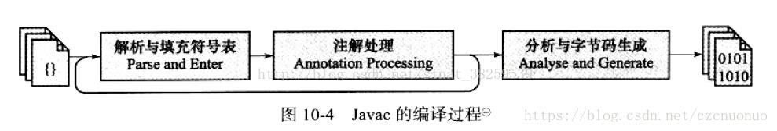
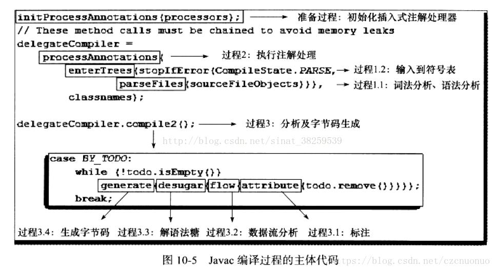
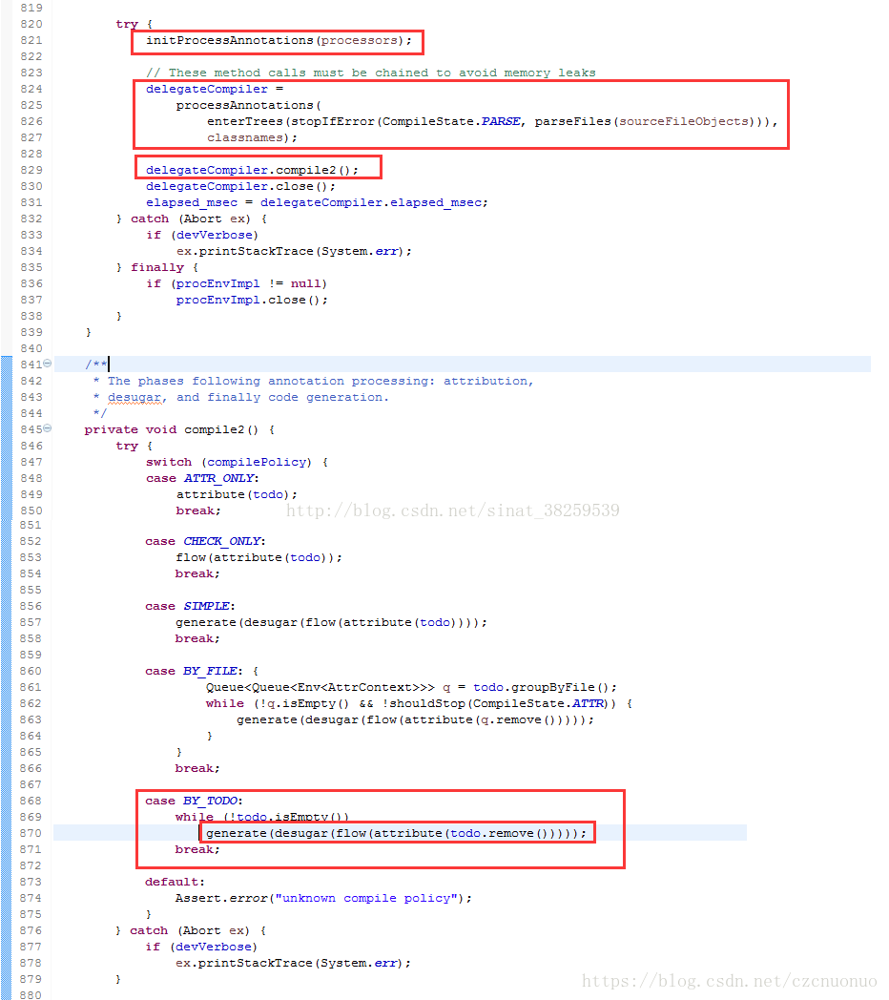
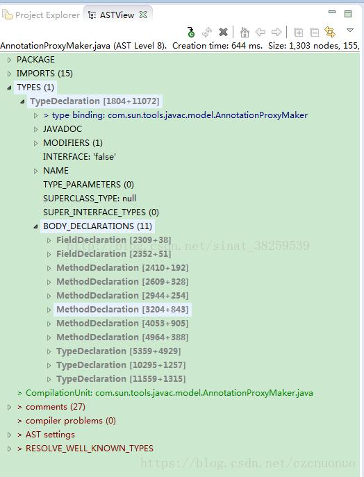
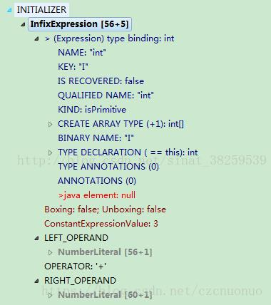

编译器优化
Table of Contents
Java语言的 编译期 其实是一段 不确定 的操作过程，因为它可能是：
- 前端 编译器: 把 java文件 转化为 class文件 的过程
- 后端 运行期编译器（JIT编译器）: 把 字节码 转化为 机器码 的过程
- 静态提前 编译器（AOT编译器）：直接把 java文件 编译成 本地机器代码 的过程
下面列举了这3类编译过程中一些比较有代表性的编译器：
- 前端编译器：
- Sun的Javac
- Eclipse JDT中的增量式编译器
- JIT编译器：
- HotSpot VM的C1编译器
- HotSpot VM的C2编译器
- AOT编译器：
- GNU Compiler for the Java(GCJ)
- Excelsior JET
这3类过程中最符合大家对Java程序编译认知的应该是第一类 这里提到的“编译期”和“编译器”都仅限于第一类编译过程 把第二类编译过程留到以后中讨论
限制了编译范围后，对于 优化 二字的定义就需要宽松一些，因为Javac这类编译器对代码的运行效率几乎没有任何优化措施。虚拟机设计团队把对性能的优化集中到了后端的即时编译器中，这样可以让那些不是由Javac产生的Class文件（如JRuby、Groovy等语言的Class文件）也同样能享受到编译器优化所带来的好处。但是Javac做了许多针对Java语言编码过程的优化措施来改善程序员的编码风格和提高编码效率。相当多新生的Java语法特性，都是靠编译器的 语法糖 来实现，而不是依赖虚拟机的底层改进来支持，可以说：
- 即时编译器 在运行期的优化过程对于 程序运行 来说更重要
- 前端编译器 在编译期的优化过程对于 程序编码 来说关系更加密切
Javac编译器
分析源码是了解一项技术的实现内幕最有效的手段，Javac编译器不像HotSpot虚拟机那样使用C++语言（包含C少量C语言）实现，它本身就是一个由Java语言编写的程序，这为纯Java的程序员了解它的编译过程带来了很大的便利
Javac的源码与调试
Javac的源码存放在JDK_SRC_HOME/langtools/src/share/classes/com/sun/tools/javac中，除了JDK自身的API外，就只用了JDK_SRC_HOME/langtools/src/share/classes/com/sum/*里面的代码，调试环境建立起来简单方便，因为基本上不需要处理依赖关系
导入了Javac的源码后，就可以运行 com.sun.tools.javac.Main 的 main() 方法来执行编译了，与命令行中使用的Javac的命令没有什么区别
虚拟机规范严格定义了Class文件的格式
《JVM虚拟机规范（第二版）》中，虽然有专门的一章“Compiling for the Java Virtual Machine”，
但都是以举例的形式描述，并没有如何把Java源码文件转变为Class文件的编译过程进行十分严格的定义，
这导致Class文件编译在某种程度上是与具体JDK实现相关的
在一些极端情况，可能出现一段代码Javac编译器可以编译，但是ECJ编译器就不可以编译的问题
从Sun Javac的代码来看，编译过程大致可以分为3个过程，分别是：
- 解析与填充符号表 过程
- 插入式注解处理器的 注解处理 过程
- 分析与 字节码生成 过程
这三个步骤之间的关系与交互顺序如图所示：

Javac编译动作的入口是 com.sun.tools.javac.main.JavaCompiler 类，上述3个过程的代码逻辑集中在这个类的 compile() 和 compile2() 方法中，其中主体代码如图所示，整个编译最关键的处理就由图中标注的8个方法来完成：


解析与填充符号表
解析步骤由 parseFiles() 方法完成，解析步骤包括了经典程序编译原理中的 词法分析 和 语法分析 两个过程
词法、语法分析
词法分析：将源代码的 字符流 转变为 标记 (Token) 集合
- 单个字符是程序编写过程的最小元素，而标记则是 编译过程的最小元素
- 关键字、变量名、字面量、运算符都可以成为标记
- 在 Javac 的源码中词法分析过程由 com.sun.tools.javac.parser.Scanner 类来实现
如 “int a=b+2” 这句代码包含了 6 个标记，分别是 int、a、=、b、+、2
虽然关键字 int 由 3 个字符构成，但是它只是一个 Token，不可再拆分
语法分析：根据 Token 序列 构造 抽象语法树 的过程
- 抽象语法树(AST)：一种用来 描述程序代码语法结构 的树形表示方式
- 语法树的每一个节点都代表着程序代码中的一个语法结构(Construct)
- 在 Javac 的源码中，语法分析过程由 com.sun.tools.javac.parser.Parser 类实现
- 这个阶段产出的抽象语法树由 com.sun.tools.javac.tree.JCTree 类表示
例如 包 、 类型 、 修饰符 、 运算符 、 接口 、 返回值 甚至 代码注释 等都可以是一个语法结构
下图是根据 Eclipse AST View 插件分析出来的某段代码的抽象语法树视图，可以通过这张图对抽象语法树有一个直观的认识：

经过这个步骤之后，编译器就基本不会再对源码文件进行操作了，后续的操作都建立在抽象语法树之上
填充符号表
完成了语法分析和词法分析之后，下一步就是填充符号表的过程，也就是 enterTrees() 方法（过程 1.2）所做的事情：
- 符号表(Symbol Table)：由一组 符号地址 和 符号信息 构成的表格，可以把它想象成哈希表中 K-V 值对的形式
- 符号表中所登记的信息在编译的不同阶段都要用到：
- 语义分析 中，符号表所登记的内容将用于 语义检查 （如检查一个名字的使用和原先的说明是否一致）和产生 中间代码
- 目标代码 生成阶段，当对符号名进行地址分配时， 符号表是 地址分配的依据
实际上符号表不一定是哈希表实现，可以是有序符号表、树状符号表、栈结构符号表等
在 Javac 源代码中，填充符号表的过程由 com.sun.tools.javac.comp.Enter 类实现：
- 此过程的出口是一个待处理列表（To Do List），包含了：
- 每一个编译单元的抽象语法树的顶级节点
- package-info.java（如果存在的话）的顶级节点
注解处理器
在JDK1.5之后，Java语言提供了对 注解 (Annotation)的支持
这些注解与普通的Java代码一样，是在 运行期间 发挥作用的
在JDK1.6中实现了 JSR-269 规范，提供了一组 插入式注解处理器的标准API 在 编译期间对注解 进行处理，可以把它看做是一组 编译器的插件
- 在这些插件里面，可以 读取 、 修改 、 添加 抽象语法树 中的 任意元素
- 如果这些插件在处理注解期间对语法树进行了修改，编译器将回到解析及填充符号表的过程重新处理，直到所有插入式注解处理器都没有再对语法树进行修改为止：每一次循环称为一个Round
有了编译器注解处理的标准API后，代码才有可能干涉编译器的行为
由于语法树中的任意元素，甚至包括代码注释都可以在插件之中访问到，所以通过插入式注解处理器实现的插件在功能上有很大的发挥空间
只要有足够的创意，程序员可以使用插入式注解处理器来实现许多原本只能在编码中完成的事情
在Javac源码中，插入式注解处理器的初始化过程是在 initPorcessAnnotations() 方法中完成的，而它的执行过程则是在 processAnnotations() 方法中完成的，这个方法判断是否还有新的注解处理器需要执行，如果有的话，通过 com.sun.tools.javac.processing.JavacProcessingEnvironment 类的 doProcessing() 方法生成一个新的JavaCompiler对象对编译的后续步骤进行处理
语义分析与字节码生成
语法分析之后，编译器获得了程序代码的抽象语法树表示，语法树能表示一个结构正确的源程序的抽象，但无法保证源程序是符合逻辑的。而语义分析的主要任务是对 结构上正确的源程序 进行 上下文有关性质的审查 ，如进行 类型审查 。举个例子，假设有如下的 3 个变量定义语句：
int a = 1; boolean b = false; char c = 2;
后续可能出现的赋值运算：
int d = a + c; int d = b + c; char d = a + c;
后续代码中如果出现了如上 3 种赋值运算的话，那它们都能构成结构正确的语法树，但是只有第 1 种的写法在语义上是没有问题的，能够通过编译，其余两种在 Java 语言中是不合逻辑的，无法编译
是否合乎语义逻辑必须限定在语言与具体的上下文环境之中才有意义
如在 C 语言中，a、b、c 的上下文定义不变，第 2、3 种写法都是可以正确编译
Javac 的编译过程中，语义分析过程分为 标注检查 以及 数据及控制流分析 两个步骤，分别由 attribute() 和 flow() 方法（对应图中过程 3.1 和过程 3.2）完成
标注检查
标注检查步骤检查的内容包括诸如：
- 变量使用前是否已被声明
- 变量与赋值之间的数据类型 是否能够匹配等
还有一个重要的动作称为 常量折叠 ，如果在代码中写了如下定义：
int a = 1 + 2;
那么在语法树上仍然能看到字面量 1 、 2 以及操作符 + ，但是在经过常量折叠之后，它们将会被折叠为字面量 3 ，如图所示，这个插入式表达式的值已经在语法树上标注出来了： ConstantExpressionValue:3 。由于编译期间进行了常量折叠，所以在代码里面定义 a=1+2 比起直接定义 a=3 ，并不会增加程序运行期哪怕仅仅一个 CPU 指令的运算量：

标注检查步骤在 Javac 源码中的实现类是 com.sun.tools.javac.comp.Attr 类和 com.sun.tools.javac.comp.Check 类
数据及控制流分析
数据及控制流分析：对 程序上下文逻辑更进一步的验证 ，它可以检测出：
- 程序局部变量是在使用前是否有赋值
- 方法的每条路径是否都有返回值
- 是否所有的受查异常都被正确处理了等问题
编译时期的数据及控制流分析与类加载时数据及控制流分析的目的基本上是一致的，但校验范围有所区别，有一些校验只有在编译期或运行期才能进行。下面举一个关于 final 修饰符的数据及控制流分析的例子：
//代码清单10-1 final语义校验 //方法一带有final修饰 public void foo(final int arg){ final int var = 0; //do something } //方法二没有final修饰 public void foo(int arg){ int var = 0; //do something }
在这两个foo()方法中，第一种方法的参数和局部变量定义使用了final修饰符，而第二种方法则没有
- 在代码编写的时程序肯定会受到final修饰符的影响，不能再改变arg和var变量的值，但是 这两段代码编译出来的Class文件是没有任何一点区别的
局部变量与字段（实例变量、类变量）是有区别的，它在常量池中没有CONSTANT_Fieldref_info的符号引用
自然就没有访问标志（Access_Flags）的信息，甚至可能连名称都不会保留下来（取决于编译时的选项）
自然在Class文件中不可能知道一个局部变量是不是声明为final了
因此，将局部变量声明为final，对运行期是没有影响的，变量的不变性仅仅由编译器在编译期间保障
在Javac的源码中，数据及控制流分析的入口是 flow() 方法（对应图中的过程3.2），具体操作有 com.sun.tools.javac.comp.Flow 类来完成
解语法糖
语法糖（Syntactic Sugar），是由英国计算机科学家彼得・约翰・兰达（Perter J.Landin）发明的一个术语 指在计算机语言中添加的某种语法，这种语法对语言的功能并没有影响，但是更方便程序员使用 通常来说，使用语法糖能够增加程序的可读性，从而减少程序代码出错的机会 Java 在现代编程语言之中属于 “低糖语言”（相对于 C# 及许多其他 JVM 语言来说），尤其是 JDK 1.5 之前的版本 “低糖” 语法也是 Java 语言被怀疑已经 “落后” 的一个表面理由
Java 中最常用的语法糖主要是前面提到过的：
- 泛型 : 并不一定都是语法糖实现，如 C# 的泛型就是直接由 CLR 支持的
- 变长参数
- 自动装箱 / 拆箱等
虚拟机运行时不支持这些语法，它们在编译阶段还原回简单的基础语法结构，这个过程称为 解语法糖
在 Javac 的源码中，解语法糖的过程由 desugar() 方法触发，在 com.sun.tools.javac.comp.TransTypes 类和 com.sun.tools.javac.comp.Lower 类中完成
字节码生成
字节码生成是 Javac 编译过程的最后一个阶段，在 Javac 源码里面由 com.sun.tools.javac.jvm.Gen 类来完成。字节码生成阶段不仅仅是把前面各个步骤所生成的信息（语法树、符号表）转化成字节码写到磁盘中，编译器还进行了少量的 代码添加和转换 工作
例如，前面多次提到的实例构造器 _<init>()_ 方法和类构造器 _<clinit>()_ 方法就是在这个阶段添加到语法树之中的
注意：这里的实例构造器并不是指默认的构造函数
如果用户代码中没有提供任何构造函数，那编译器将会添加一个没有参数的、访问性（public、protected 或 private）与当前类一直的默认构造函数
这个工作在填充符号表阶段就已经完成，这两个构造器的产生过程实际上是一个代码收敛的过程
编译器会把语句块：
对于实力构造器而言是 “{}” 块，对于类构造器而言是 “static{}” 块
变量初始化（实力变量和类变量）
调用父类的实例构造器：仅仅是实例构造器，<clinit>() 方法中无须调用父类的 <clinit>() 方法，虚拟机会自动保证父类构造器的执行
但在 <clinit>() 方法中经常会生成调用 java.lang.Object 的 <init>() 方法的代码等操作收敛到 <init>() 和 <clinit>() 方法之中
并且保证一定是按先执行父类的实例构造器，然后初始化变量，最后执行语句块的顺序进行
上面所述的动作由 Gen.normalizeDef() 方法来实现
除了生成构造器以外，还有其他的一些代码替换工作用于优化程序的实现逻辑：
如把字符串的加操作替换为 StringBuffer 或 StringBuilder（取决于目标代码的版本是否大于或等于 JDK 1.5）的 append() 操作等
完成了对语法树的遍历和调整之后，就会把填充了所有所需信息的符号表交给 com.sun.tools.javac.jvm.ClassWriter 类，由这个类的 writeClass() 方法输出字节码， 生成最终的 Class 文件 ，到此为止整个编译过程宣告结束
语法糖
几乎各种语言或多或少都提供过一些语法糖来方便程序员的代码开发，这些语法糖虽然不会提供实质性的功能改进，但是它们或能提高效率，或能提升语法的严谨性，或能减少编码出错的机会。不过也有一种观点认为语法糖并不一定都是有益的，大量添加和使用 “含糖” 的语法，容易让程序员产生依赖，无法看清语法糖的糖衣背后，程序代码的真实面目
总而言之，语法糖可以看做是编译器实现的一些 “小把戏”，这些 “小把戏” 可能会使得效率 “大提升”，但也应该去了解这些 “小把戏” 背后的真实世界，那样才能利用好它们，而不是被它们所迷惑
泛型与类型擦除
泛型是 JDK 1.5 的一项新增特性，它的本质是 参数化类型 (Parametersized Type)的应用，也就是说 操作的数据类型被指定为一个参数 。这种参数类型可以用在类、接口和方法的创建中，分别称为 泛型类 、 泛型接口 和 泛型方法
泛型思想早在 C++ 语言的模板 (Template) 中就开始生根发芽
在 Java 语言处于还没有出现泛型的版本时，只能通过 Object 是所有类型的父类和类型强制转换两个特点的配合来实现类型泛化
例如，在哈希表的存取中，JDK 1.5 之前使用 HashMap 的 get() 方法，返回值就是一个 Object 对象
由于 Java 语言里面所有的类型都继承于 java.lang.Object，所以 Object 转型成任何对象都是有可能的
但是也因为有无限的可能性，就只有程序员和运行期的虚拟机才知道这个 Object 到底是什么类型的对象
在编译期间，编译器无法检查这个 Object 的强制转型是否成功
如果仅仅依赖程序员去保障这项操作的正确性，许多 ClassCastException 的风险就会转嫁到程序运行期之中
泛型技术在 C# 和 Java之中的使用方式看似相同，但实现上却有着根本性的分歧，C# 里面泛型无论是在程序源码中、编译后的 IL 中（Intermediate Language，中间语言，这时候泛型是一个占位符），或是运行期的 CLR 中，都是切实存在的， List<int> 与 List<String> 就是两个不同的类型 ，它们在系统运行期生成，有自己的虚方法表和类型数据，这种实现称为 类型膨胀 ，基于这种方法实现的泛型称为 真实泛型
Java 语言中的泛型则不一样，它 只在程序源码中存在 ，在编译后的字节码文件中，就已经替换为原来的 原生类型 (Raw Type)了，并且在相应的地方 插入了强制类型 代码，因此，对于运行期的 Java 语言来说， ArrayList<int> 与 ArrayList<String> 就是同一个类 ，所以泛型技术实际上是 Java 语言的一颗语法糖，Java 语言中的泛型实现方法称为 类型擦除 ，基于这种方法实现的泛型称为 伪泛型
下面代码是一段简单的 Java 泛型的例子，可以看一下它编译后的结果是怎样的：
public static void main(String[] args) { Map<String, String> map = new HashMap<>(); map.put("hello", "你好"); map.put("how are you?", "吃了没？"); System.out.println(map.get("hello")); System.out.println(map.get("how are you?")); }
把这段 Java 代码编译成 Class 文件，然后再用字节码反编译工具进行反编译后，将会发现泛型都不见了（用jd-gui 查看发现声明的时候泛型还在，其他地方就变成了强制类型转换），程序又变回了 Java 泛型出现之前的写法，泛型类型都变回了原生类型
当初 JDK 设计团队为什么选择类型擦除的方式来实现 Java 语言的泛型支持呢？是因为实现简单、兼容性考虑还是别的原因？
现在已不得而知，但确实有不少人对 Java 语言提供的伪泛型颇有微词
在当时众多的批评之中，有一些是比较表面的：
从性能上说泛型会由于强制转型操作和运行期缺少针对类型的优化等从而导致比 C# 的泛型慢一些，则是完全偏离了方向
姑且不论 Java 泛型是不是真的会比 C# 泛型慢，选择从性能的角度上评价用于提升语义准确性的泛型思想就不太恰当
通过擦除法来实现泛型丧事了一些泛型思想应有的优雅，例如：
public class GenericTypes { public static void method(List<String> list) { System.out.println("invoke method(List<String> list)"); } public static void method(List<Integer> list) { System.out.println("invoke method(List<Integer> list)"); } }
这段代码是不能被编译的，因为参数 List<Integer> 和 List<String> 编译之后都被擦除了，变成了一样的原生类型 List<E>，擦除动作导致这两种方法的特征签名变得一模一样。初步看来，无法重载的原因已经找到了，但真的就是如此吗？只能说，泛型擦除成相同的原生类型只是无法重载的其中一部分原因，请再接着看一看：
public class GenericTypes { public static String method(List<String> list) { System.out.println("invoke method(List<String> list)"); return ""; } public static int method(List<Integer> list) { System.out.println("invoke method(List<Integer> list)"); return 1; } public static void main(String[] args) { method(new ArrayList<String>()); method(new ArrayList<Integer>()); } }
invoke method(List<String> list) invoke method(List<Integer> list)
上面这个例子从JDK7开始已经无法编译
两者的差别是两个 method 方法添加了 不同的返回值 ，由于这两个返回值的加入，方法重载居然成功了，即这段代码可以被编译和执行。这是对 Java 语言中返回值不参与重载选择的基本认知的挑战吗？
重载当然不是根据返回值来确定的
但所以这次能编译和执行成功，确实是因为两个 method() 方法加入了不同的返回值后才能共存在一个 Class 文件之中。
前面介绍 Class 文件方法表的数据结构时曾经提到过
方法重载要求方法具备不同的特征签名，返回值并不包含在方法的特征签名之中，所以返回值不参与重载选择
但是在 Class 文件格式之中，只要描述符不是完全一致的两个方法就可以共存
也就是说，两个方法如果有相同的名称和特征签名，但返回值不同，那它们也是可以合法地共存于一个 Class 文件中的
由于 Java 泛型的引入，各种场景（虚拟机解析、反射等）下的方法调用都有可能对原有的基础产生影响和新的需求，如在泛型类中如何获取传入的参数化类型等。因此，JCP 组织对虚拟机规范作出了相应的修改，引入了诸如 Signature 、 LocalVariableTable 等新的属性用于解决伴随而来的参数类型的识别问题，Signature是其中最重要的一项属性，它的作用就是 存储一个方法在字节码层面的特征签名 ，这个属性中 保存的参数类型并不是原生类型 ，而是包括了 参数化类型的信息 。修改后的虚拟机规范要求所有能识别 49.0 以上版本的 Class 文件的虚拟机都要能 正确地识别 Signature 参数
从上面的例子可以看到擦除法对实际编码带来的影响
由于 List<String> 和 List<Integer> 擦除后是同一个类型，只能添加两个并不需要实际使用到的返回值才能完成重载
这是一种毫无优雅和美感可言的解决方案，并且存在一定语意上的混乱
另外，从 Signature 属性的出现还可以得出结论，擦除法所谓的擦除，仅仅是对 方法的 Code 属性中的字节码进行擦除 ，实际上 元数据中还是保留了泛型信息 ，这也是能通过 反射手段 取得 参数化类型 的根本依据
自动装箱、拆箱与遍历循环
从纯技术的角度来讲，自动装箱、自动拆箱与遍历循环（For each 循环）这些语法糖，无论是实现上还是思想上都不能和上文介绍的泛型相比，两者的难度和深度都有很大差距。来讲解它们只有一个理由：毫无疑问，它们是 Java 语言里使用得最多的语法糖。通过代码来看看这些语法糖在编译后会发生什么样的变化：
public static void main(String[] args) { List<Integer> list = Arrays.asList(1, 2, 3, 4); // 如果在 JDK 1.8 中，还有另外一颗语法糖 // 能让上面这句代码进一步简写成 List<Integer> list = [1, 2, 3, 4]; int sum = 0; for (int i : list) { sum += i; } System.out.println(sum); }
这里总共包含了 泛型 、 自动装箱 、 自动拆箱 、 遍历循环 与 变长参数 5 种语法糖，下面代码则展示了它们在编译后的变化：
public static void main(String[] args) { List list = Arrays.asList(new Integer[]{ Integer.valueOf(1), Integer.valueOf(2), Integer.valueOf(3), Integer.valueOf(4) }); int sum = 0; for(Iterator localIterator = list.iterator(); localIterator.hasNext();){ int i = ((Integer) localIterator.next()).intValue(); sum += i; } System.out.println(sum); }
- 泛型就不必说了
- 自动装箱、拆箱在编译之后被转换成了对应的包装和还原方法，如本例中的 Integer.valueOf() 与 Integer.intValue() 方法
- 遍历循环则把代码还原成了 迭代器 的实现，这也是为何遍历循环需要被遍历的类实现Iterable接口的原因
变长参数，它在调用的时候变成了一个 数组类型的参数 ，在变长参数出现之前，程序员就是使用数组来完成类似功能的
这些语法糖虽然看起来很简单，但也不见得就没有任何值得注意的地方，下面代码演示了自动装箱的一些错误用法：
public static void main(String[] args) { Integer a = 1; Integer b = 2; Integer c = 3; Integer d = 3; Integer e = 321; Integer f = 321; Long g = 3L; System.out.println(c == d); // true System.out.println(e == f); // false System.out.println(c == (a + b)); // true System.out.println(c.equals(a + b)); // true System.out.println(g == (a + b)); // true System.out.println(g.equals(a + b)); // false }
- 包装类的 == 运算在 不遇到算术运算的情况下不会自动拆箱
- 包装类的 equals() 方法 不处理数据转型
条件编译
许多程序设计语言都提供了条件编译的途径，如 C、C++ 中使用预处理器指示符（#ifdef）来完成条件编译 C、C++ 的预处理其最初的任务是解决编译时的代码依赖关系（如非常常用的 #include 预处理命令） 而在 Java 语言之中并没有使用预处理器，因为 Java 语言天然的编译方式 编译器并非一个个地编译 Java 文件，而是将所有编译单元的语法树顶级节点输入到待处理列表后再进行编译 因此各个文件直接能够互相提供符号信息，所以无须使用预处理器 那 Java 语言是否有办法实现条件编译呢？
Java 语言当然也可以进行条件编译，方法就是使用 条件为常量的 if 语法 。如下面代码所示：
public static void main(String[] args) { if (true) { System.out.println("block 1"); } else { System.out.println("block 2"); } }
此代码中的 if 语句不同于其他 Java 代码，它在编译阶段就会被 “运行”，生成的字节码之中之包括 System.out.println("block 1"); 一条语句，并不会包含 if 语句及另外一个分子中的 System.out.println("block 2); 。上述代码编译后 Class 文件的反编译结果：
public static void main(String[] args) { System.out.println("block 1"); }
只能使用 条件为常量 的 if 语句才能达到上述效果，如果使用常量与其他带有条件判断能力的语句搭配，则可能在控制流分析中提示错误，被拒绝编译，如下面代码所示的代码就会被编译器拒绝编译：
public static void main(String[] args) { // 编译器将会提示 "Unreachable code" while (false) { System.out.println(""); } }
Java语言中条件编译的实现，也是Java语言的一颗语法糖，根据布尔常量值的真假，编译器将会把 分支中不成立的代码块消除掉 ，这一工作将在编译器解除语法糖阶段 com.sun.tools.javac.comp.Lower 类中完成
由于这种条件编译的实现方式使用了if语句，所以它必须遵循最基本的Java语法，只能写在方法体内部
因此它只能实现语句基本块(Block)级别的条件编译，而没有办法实现根据条件调整整个Java类的结构
除了本节中介绍的泛型、自动装箱、自动拆箱、遍历循环、变长参数和条件编译之外，Java语言还有不少其他的语法糖，如 内部类 、 枚举类 、 断言语句 、对 枚举和字符串的switch支持 （在JDK1.7中支持）、 try语句中定义和关闭资源 （在JDK1.7中支持）等
插入式注解处理器
通过阅读Javac编译器的源码，了解编译器在把Java程序源码编译为字节码的时候，会对Java程序源码做各方面的检查校验 这些校验主要以程序“写得对不对”为出发点，虽然也有各种WARNING的信息，但总体来讲还是较少去校验程序“写得好不好” 有鉴于此，业界出现了许多针对程序“写得好不好”的辅助校验工具，如CheckStyle、FindBug、Klocwork等 这些代码校验工具有一些是基于Java的源码进行校验，还有一些是通过扫描字节码来完成 在本节的实战中，将会使用注解处理器API来编写一款拥有自己编码风格的校验工具：NameCheckProcessor
由于实战都是为了学习和演示技术原理，NameCheckProcessor的目标也仅定为对Java程序命名进行检查，根据《Java语言规范（第3版）》中第6.8节的要求，Java程序命名应当符合下列格式的书写规范：
- 类（或接口）：符合驼式命名法，首字母大写
- 方法：符合驼式命名法，首字母小写
- 字段：
- 类或实例变量：符合驼式命名法，首字母小写
- 常量：要求全部由大写字母或下划线构成，并且第一个字符不能是下划线
上文提到的驼式命名法，正如它的名称所表示的那样，是指混合使用大小写字母来分割构成变量或函数的名字，犹如驼峰一般，这是当前Java语言中主流的命名规范，实战目标就是为Javac编译器添加一个额外的功能，在编译程序时检查程序名是否符合上述对类（或接口）、方法、字段的命名要求
代码实现
要通过注解处理器API实现一个编译器插件，首先需要了解这组API的一些基本知识。实现注解处理器的代码需要继承抽象类 javax.annotation.processing.AbstractProcessor ，这个抽象类中只有一个必须覆盖的abstract方法： process() ，它是Javac编译器在执行注解处理器代码时要调用的过程：
- 第一个参数 annotations ：获取到此注解处理器 所要处理的注解集合
- 第二个参数 roundEnv : 访问到当前这个Round中的 语法树节点 ，每个语法树节点在这里表示为一个 Element 。在JDK 1.6新增的 javax.lang.model 包中定义了16类Element，包括了Java代码中最常用的元素，如：
- 包：PACKAGE
- 枚举：ENUM
- 类：CLASS
- 注解：ANNOTATION_TYPE
- 接口：INTERFACE
- 枚举值：ENUM_CONSTANT
- 字段：FIELD
- 参数：PARAMETER
- 本地变量：LOCAL_VARIABLE
- 异常：EXCEPTION_PARAMETER
- 方法：METHOD
- 构造函数：CONSTRUCTOR
- 静态语句块：STATIC_INIT，即static{}块
- 实例语句块：INSTANCE_INIT，即{}块
- 参数化类型：TYPE_PARAMETER，既泛型尖括号内的类型
- 未定义的其他语法树节点：OTHER
除了 process() 方法的传入参数之外，还有一个很常用的实例变量 processingEnv ，它是AbstractProcessor中的一个protected变量，在注解处理器初始化的时候（init()方法执行的时候）创建，继承了AbstractProcessor的注解处理器代码可以直接访问到它。它代表了 注解处理器框架提供的一个上下文环境 ，要 创建新的代码 、向 编译器输出信息 、 获取其他工具类 等都需要用到这个实例变量
注解处理器除了还有两个可以配合使用的Annotations：
- @SupportedAnnotationTypes：这个注解处理器对哪些注解感兴趣，可以使用星号“*”作为通配符代表对所有的注解都感兴趣
- @SupportedSourceVersion：这个注解处理器可以处理哪些版本的Java代码
每一个注解处理器在运行的时候都是 单例 的，如果不需要改变或生成语法树的内容，process() 方法就可以返回一个值为 false 的布尔值，通知编译器这个Round中的代码未发生变化，无须构造新的JavaCompiler实例，在这次实战的注解处理器中只对程序命名进行检查，不需要改变语法树的内容，因此process()方法的返回值都是false。下面来看看注解处理器NameCheckProcessor的具体代码：
import javax.annotation.processing.AbstractProcessor; import javax.annotation.processing.ProcessingEnvironment; import javax.annotation.processing.RoundEnvironment; import javax.annotation.processing.SupportedAnnotationTypes; import javax.lang.model.element.Element; import javax.lang.model.element.TypeElement; import java.util.Set; // 可以用"*"表示支持所有Annotations @SupportedAnnotationTypes("*") //@SupportedSourceVersion(SourceVersion.RELEASE_7) public class NameCheckProcessor extends AbstractProcessor { private NameChecker nameChecker; /** * 初始化名称检查插件 */ @Override public void init(ProcessingEnvironment processingEnv) { super.init(processingEnv); nameChecker = new NameChecker(processingEnv); } /** * 对输入的语法树的各个节点进行进行名称检查 */ @Override public boolean process(Set<? extends TypeElement> annotations, RoundEnvironment roundEnv) { if (!roundEnv.processingOver()) { for (Element element : roundEnv.getRootElements()) nameChecker.checkNames(element); } return false; } }
NameCheckProcessor不限于特定的注解，对任何代码都“感兴趣”，而在process() 方法中是把当前Round中的每一个RootElement传递到一个名为 NameChecker 的检查器中执行 名称检查 。NameChecker的代码：
import javax.annotation.processing.Messager; import javax.annotation.processing.ProcessingEnvironment; import javax.lang.model.element.*; import javax.lang.model.util.ElementScanner8; import java.util.EnumSet; import static com.sun.tools.javac.parser.Tokens.TokenKind.*; import static javax.lang.model.element.ElementKind.*; import static javax.lang.model.element.ElementKind.INTERFACE; import static javax.tools.Diagnostic.Kind.WARNING; /** * 程序名称规范的编译器插件：<br> * 如果程序命名不合规范，将会输出一个编译器的WARNING信息 */ class NameChecker { private final Messager messager; private NameCheckScanner nameCheckScanner = new NameCheckScanner(); NameChecker(ProcessingEnvironment processsingEnv) { this.messager = processsingEnv.getMessager(); } /** * 对Java程序命名进行检查，根据《Java语言规范》第三版第6.8节的要求，Java程序命名应当符合下列格式： * * <ul> * <li>类或接口：符合驼式命名法，首字母大写。 * <li>方法：符合驼式命名法，首字母小写。 * <li>字段： * <ul> * <li>类、实例变量: 符合驼式命名法，首字母小写。 * <li>常量: 要求全部大写。 * </ul> * </ul> */ void checkNames(Element element) { nameCheckScanner.scan(element); } /** * 名称检查器实现类，继承了JDK 8中新提供的ElementScanner8<br> * 将会以Visitor模式访问抽象语法树中的元素 */ private class NameCheckScanner extends ElementScanner8<Void, Void> { /** * 此方法用于检查Java类 */ @Override public Void visitType(TypeElement e, Void p) { scan(e.getTypeParameters(), p); checkCamelCase(e, true); super.visitType(e, p); return null; } /** * 检查方法命名是否合法 */ @Override public Void visitExecutable(ExecutableElement e, Void p) { if (e.getKind() == METHOD) { Name name = e.getSimpleName(); if (name.contentEquals(e.getEnclosingElement().getSimpleName())) messager.printMessage(WARNING, "一个普通方法 “" + name + "”不应当与类名重复，避免与构造函数产生混淆", e); checkCamelCase(e, false); } super.visitExecutable(e, p); return null; } /** * 检查变量命名是否合法 */ @Override public Void visitVariable(VariableElement e, Void p) { // 如果这个Variable是枚举或常量，则按大写命名检查，否则按照驼式命名法规则检查 if (e.getKind() == ENUM_CONSTANT || e.getConstantValue() != null || heuristicallyConstant(e)) checkAllCaps(e); else checkCamelCase(e, false); return null; } /** * 判断一个变量是否是常量 */ private boolean heuristicallyConstant(VariableElement e) { if (e.getEnclosingElement().getKind() == INTERFACE) return true; else return e.getKind() == FIELD && e.getModifiers().containsAll(EnumSet.of(PUBLIC, STATIC, FINAL)); } /** * 检查传入的Element是否符合驼式命名法，如果不符合，则输出警告信息 */ private void checkCamelCase(Element e, boolean initialCaps) { String name = e.getSimpleName().toString(); boolean previousUpper = false; boolean conventional = true; int firstCodePoint = name.codePointAt(0); if (Character.isUpperCase(firstCodePoint)) { previousUpper = true; if (!initialCaps) { messager.printMessage(WARNING, "名称“" + name + "”应当以小写字母开头", e); return; } } else if (Character.isLowerCase(firstCodePoint)) { if (initialCaps) { messager.printMessage(WARNING, "名称“" + name + "”应当以大写字母开头", e); return; } } else conventional = false; if (conventional) { int cp = firstCodePoint; for (int i = Character.charCount(cp); i < name.length(); i += Character.charCount(cp)) { cp = name.codePointAt(i); if (Character.isUpperCase(cp)) { if (previousUpper) { conventional = false; break; } previousUpper = true; } else previousUpper = false; } } if (!conventional) messager.printMessage(WARNING, "名称“" + name + "”应当符合驼式命名法（Camel Case Names）", e); } /** * 大写命名检查，要求第一个字母必须是大写的英文字母，其余部分可以是下划线或大写字母 */ private void checkAllCaps(Element e) { String name = e.getSimpleName().toString(); boolean conventional = true; int firstCodePoint = name.codePointAt(0); if (!Character.isUpperCase(firstCodePoint)) conventional = false; else { boolean previousUnderscore = false; int cp = firstCodePoint; for (int i = Character.charCount(cp); i < name.length(); i += Character.charCount(cp)) { cp = name.codePointAt(i); if (cp == (int) '_') { if (previousUnderscore) { conventional = false; break; } previousUnderscore = true; } else { previousUnderscore = false; if (!Character.isUpperCase(cp) && !Character.isDigit(cp)) { conventional = false; break; } } } } if (!conventional) messager.printMessage(WARNING, "常量“" + name + "”应当全部以大写字母或下划线命名，并且以字母开头", e); } } }
NameChecker的代码看起来有点长，但实际上注释占了很大一部分，其实即使算上注释也不到190行。它通过一个继承于 javax.lang.model.util.ElementScanner6 的 NameCheckScanner 类，以 Visitor 模式来完成对语法树的遍历，分别执行 visitType() 、 visitVariable() 和 visitExecutable() 方法来访问类、字段和方法，这3个visit方法对各自的命名规则做相应的检查，checkCamelCase() 与checkAllCaps() 方法则用于实现 驼式命名法 和 全大写命名 规则的检查
运行测试
为了验证实战成果，下面提供了一段命名规范的“反面教材”代码，其中的每一个类、方法及字段的命名都存在问题，但是使用普通的Javac编译这段代码时不会提示任何一个Warning信息：
public class BADLY_NAMED_CODE { enum colors { red, blue, green; } static final int _FORTY_TWO = 42; public static int NOT_A_CONSTANT = _FORTY_TWO; protected void BADLY_NAMED_CODE() { return; } public void NOTcamelCASEmethodNAME() { return; } }
- 通过Javac命令的 -processor 参数来 执行编译时需要附带的注解处理器 ，如果有多个注解处理器的话，用逗号分隔
- 还可以使用 -XprintRounds 和 -XprintProcessorInfo 参数来 查看注解处理器运作的详细信息
这里用NameCheckProcessor的编译及执行过程如下：
klose@ubuntu16-188 ~/tmp/src $ javac com/sun/tools/javac/main/NameChecker.java klose@ubuntu16-188 ~/tmp/src $ javac com/sun/tools/javac/main/NameCheckProcessor.java klose@ubuntu16-188 ~/tmp/src $ javac -processor com.sun.tools.javac.main.NameCheckProcessor BADLY_NAMED_CODE.java warning: No SupportedSourceVersion annotation found on com.sun.tools.javac.main.NameCheckProcessor, returning RELEASE_6. warning: Supported source version 'RELEASE_6' from annotation processor 'com.sun.tools.javac.main.NameCheckProcessor' less than -source '1.8' BADLY_NAMED_CODE.java:1: warning: 名称“BADLY_NAMED_CODE”应当符合驼式命名法（Camel Case Names） public class BADLY_NAMED_CODE { ^ BADLY_NAMED_CODE.java:3: warning: 名称“colors”应当以大写字母开头 enum colors { ^ BADLY_NAMED_CODE.java:4: warning: 常量“red”应当全部以大写字母或下划线命名，并且以字母开头 red, blue, green; ^ BADLY_NAMED_CODE.java:4: warning: 常量“blue”应当全部以大写字母或下划线命名，并且以字母开头 red, blue, green; ^ BADLY_NAMED_CODE.java:4: warning: 常量“green”应当全部以大写字母或下划线命名，并且以字母开头 red, blue, green; ^ BADLY_NAMED_CODE.java:7: warning: 常量“_FORTY_TWO”应当全部以大写字母或下划线命名，并且以字母开头 static final int _FORTY_TWO = 42; ^ BADLY_NAMED_CODE.java:9: warning: 名称“NOT_A_CONSTANT”应当以小写字母开头 public static int NOT_A_CONSTANT = _FORTY_TWO; ^ BADLY_NAMED_CODE.java:11: warning: 一个普通方法 “BADLY_NAMED_CODE”不应当与类名重复，避免与构造函数产生混淆 protected void BADLY_NAMED_CODE() { ^ BADLY_NAMED_CODE.java:11: warning: 名称“BADLY_NAMED_CODE”应当以小写字母开头 protected void BADLY_NAMED_CODE() { ^ BADLY_NAMED_CODE.java:15: warning: 名称“NOTcamelCASEmethodNAME”应当以小写字母开头 public void NOTcamelCASEmethodNAME() { ^ 12 warnings
NameCheckProcessor的实战例子只演示了JSR-269嵌入式注解处理器API中的一部分功能 基于这组API支持的项目还有用于校验Hibernate标签使用正确性的Hibernate Validator Annotation Processor 本质上与NameCheckProcessor所做的事情差不多 自动为字段生成getter和setter方法的Project Lombok：根据已有元素生成新的语法树元素等